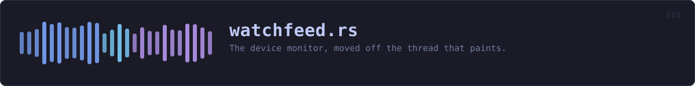

crates/veilvoice-gui/src/watchfeed.rs
veilvoice-gui · 381 lines · read the source here · or on GitHub
The device monitor, moved off the thread that paints.
Why this file exists
The monitor used to be polled straight from update, which is the user-interface thread. Asking the operating system which applications hold the microphone is not free, because on Windows it means running reg.exe and on Linux it means walking /proc, and anything that costs tens of milliseconds is several frames.
The shipped v0.1.12 did it the expensive way as well as in the wrong place: two subprocesses per application, 68 of them on the machine this was found on, costing at least 449 ms measured, every two seconds, on the thread that draws. The window froze repeatedly. veilvoice-watch now costs two subprocesses whatever is installed, and this file makes sure the remaining cost never lands on a frame.
Both halves were needed. A cheap scan on the painting thread is still a scan on the painting thread: it would be a stutter rather than a freeze, on a machine slower than the one it was tested on, and it would come back.
One thread for the life of the window
Not one per poll. Spawning a thread every two seconds to do 45 ms of work is most of a thread's lifetime spent being created, and it would put the monitor's own state, which is what makes "started" and "stopped" different from "is using", somewhere it has to be moved back and forth.
So the worker owns the veilvoice_watch::Monitor and keeps it. It polls, sends, sleeps, repeats. The window drains whatever has arrived once a frame and never waits.
It stops when the window does
Nothing tells the thread to exit. When the window closes the receiver is dropped, the next send fails, and the loop ends, which is the whole shutdown protocol and needs no flag, no channel back and no chance of hanging on exit waiting for a sleep to finish.
In plain words
Keeps the microphone and camera monitor running somewhere other than the thread that draws the window.
Asking the operating system which programs are using a device takes long enough to be visible if it happens while the window is being painted. So it happens on its own thread and the window reads whatever has arrived.
If that thread ever stops, the panel says so plainly, because a monitor that has quietly not updated for an hour looks exactly like a machine where nothing is listening.
WHAT THIS FILE CONTAINS
381 lines defining 11 functions (10 public), 2 types and 2 constants. Everything below is read out of the source, so it cannot disagree with the code.
The types it owns.
struct Updateline 63 · One look at the machine.struct WatchFeedline 73 · The window's end of the monitor.
What happens when it runs. These are the ways in: public, and nothing else in this file calls them, so they are what an outside caller reaches first.
WatchFeed::startline 115 · Start watching, on a thread of its own.
reachesidleWatchFeed::unseenline 163 · Alerts that have arrived and not yet been shown as a notification.WatchFeed::has_unseenline 168 · Whether anything is waiting to be shown.WatchFeed::drainline 176 · Take whatever has arrived.WatchFeed::activeline 221 · What is holding a device right now.WatchFeed::logline 226 · What has started and stopped, oldest first.WatchFeed::errorline 231 · Why the monitor is not answering, if it is not.WatchFeed::supportline 236 · What this platform can detect at all.WatchFeed::is_watchingline 241 · Whether there is a worker running.
WHAT CALLS WHAT
The functions this file defines, and the calls between them. An edge means the callee's name appears, called, inside the caller's body. This is a syntactic reading, not a type-resolved one.
The same graph as Mermaid source
%%{init: {"theme":"base","themeVariables":{"background":"#1a1b26","primaryColor":"#1f2335","primaryTextColor":"#c0caf5","primaryBorderColor":"#7aa2f7","secondaryColor":"#16161e","tertiaryColor":"#16161e","lineColor":"#737aa2","textColor":"#c0caf5","mainBkg":"#1f2335","nodeBorder":"#7aa2f7","clusterBkg":"#16161e","clusterBorder":"#2f3549","fontFamily":"ui-monospace, SFMono-Regular, Consolas, monospace","fontSize":"14px"}}}%%
flowchart TD
n_default["WatchFeed::default<br/>line 91"]
n_idle["WatchFeed::idle<br/>line 99"]
n_start(["WatchFeed::start<br/>line 115"])
n_unseen(["WatchFeed::unseen<br/>line 163"])
n_has_unseen(["WatchFeed::has_unseen<br/>line 168"])
n_drain(["WatchFeed::drain<br/>line 176"])
n_active(["WatchFeed::active<br/>line 221"])
n_log(["WatchFeed::log<br/>line 226"])
n_error(["WatchFeed::error<br/>line 231"])
n_support(["WatchFeed::support<br/>line 236"])
n_is_watching(["WatchFeed::is_watching<br/>line 241"])
n_default --> n_idle
n_start --> n_idle
click n_default href "https://github.com/tilas01/veilvoice/blob/main/crates/veilvoice-gui/src/watchfeed.rs#L91" "open the source"
click n_idle href "https://github.com/tilas01/veilvoice/blob/main/crates/veilvoice-gui/src/watchfeed.rs#L99" "open the source"
click n_start href "https://github.com/tilas01/veilvoice/blob/main/crates/veilvoice-gui/src/watchfeed.rs#L115" "open the source"
click n_unseen href "https://github.com/tilas01/veilvoice/blob/main/crates/veilvoice-gui/src/watchfeed.rs#L163" "open the source"
click n_has_unseen href "https://github.com/tilas01/veilvoice/blob/main/crates/veilvoice-gui/src/watchfeed.rs#L168" "open the source"
click n_drain href "https://github.com/tilas01/veilvoice/blob/main/crates/veilvoice-gui/src/watchfeed.rs#L176" "open the source"
click n_active href "https://github.com/tilas01/veilvoice/blob/main/crates/veilvoice-gui/src/watchfeed.rs#L221" "open the source"
click n_log href "https://github.com/tilas01/veilvoice/blob/main/crates/veilvoice-gui/src/watchfeed.rs#L226" "open the source"
click n_error href "https://github.com/tilas01/veilvoice/blob/main/crates/veilvoice-gui/src/watchfeed.rs#L231" "open the source"
click n_support href "https://github.com/tilas01/veilvoice/blob/main/crates/veilvoice-gui/src/watchfeed.rs#L236" "open the source"
click n_is_watching href "https://github.com/tilas01/veilvoice/blob/main/crates/veilvoice-gui/src/watchfeed.rs#L241" "open the source"
classDef entry fill:#1f2335,stroke:#7aa2f7,color:#c0caf5
class n_start,n_unseen,n_has_unseen,n_drain,n_active,n_log,n_error,n_support,n_is_watching entry
classDef api fill:#1f2335,stroke:#7dcfff,color:#c0caf5
class n_idle api
classDef helper fill:#1f2335,stroke:#bb9af7,color:#c0caf5
class n_default helperThis site loads no third-party script, so it cannot run Mermaid; the diagram above is the same nodes and edges drawn by the generator instead. GitHub renders the source below directly.
ITEMS
| Item | Line | Documentation |
|---|---|---|
EVERY const | 60 | How often to look. |
Update pub struct | 63 | One look at the machine. |
WatchFeed pub struct | 73 | The window's end of the monitor. |
MOST_ALERTS const | 88 | A log that grows without bound is a memory leak with a user interface. |
WatchFeed::default fn | 91 | |
WatchFeed::idle pub fn | 99 | A feed that watches nothing. |
WatchFeed::start pub fn | 115 | Start watching, on a thread of its own. |
WatchFeed::unseen pub fn | 163 | Alerts that have arrived and not yet been shown as a notification. |
WatchFeed::has_unseen pub fn | 168 | Whether anything is waiting to be shown. |
WatchFeed::drain pub fn | 176 | Take whatever has arrived. |
WatchFeed::active pub fn | 221 | What is holding a device right now. |
WatchFeed::log pub fn | 226 | What has started and stopped, oldest first. |
WatchFeed::error pub fn | 231 | Why the monitor is not answering, if it is not. |
WatchFeed::support pub fn | 236 | What this platform can detect at all. |
WatchFeed::is_watching pub fn | 241 | Whether there is a worker running. |